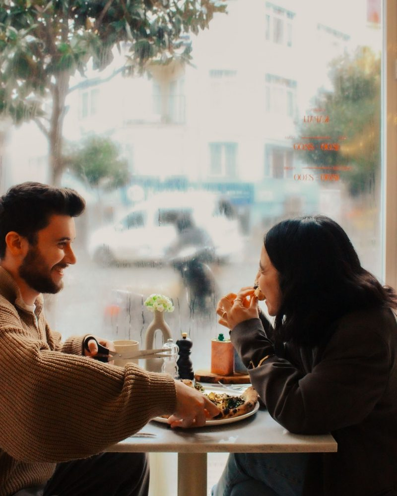

Komunita
Niekam patríš
Spájame podobne zmýšľajúcich ľudí, ktorí hľadajú viac než len neosobné kontakty na displeji.
O nás
unwaiting je komunita pre single ľudí, ktorí nečakajú na ideálny deň, správnu príležitosť ani na +1. Žijeme svoj život najlepšie, ako vieme – s priateľmi, so snami a s láskou k sebe.
Single obdobie nie je čakáreň. Je to ideálny čas vyraziť za zážitkami, spoznať nových ľudí, plniť si sny bez toho, aby si musel/a na niekoho čakať.
Naša vízia je jednoduchá: Vytvárať priestor pre skvelých ľudí, kde sa nikto necíti sám, kde vznikajú ozajstné priateľstvá a zoznamovanie dáva opäť zmysel.
Teraz, nie „raz“

Komunita
Spájame podobne zmýšľajúcich ľudí, ktorí hľadajú viac než len neosobné kontakty na displeji.

Sebahodnota
Si celý človek. Vieš, kto si a čo od života chceš. Nové vzťahy sú príležitosť obohatiť tvoj život, nie definovať tvoju hodnotu.

Sloboda
Sny, zážitky a nové dobrodružstvá. Single obdobie využívaš naplno pre seba. Bez čakania na ideálny moment. Nie všetko potrebuje +1.
Počas môjho single obdobia som sa stále častejšie stretávala s ľuďmi na rovnakej vlne. Mnohí sa vrátili zo zahraničia, priniesli si kopec zážitkov, no chýbala im tu komunita. Iní po práci cítili osamelosť a nemali odvahu ísť sa niekam zoznamovať.
Keď aj skúsili nejaké športové kluby, rýchlo zistili, že sa tam ide na výkon a výsledky. Všade sa vyžadovala nejaká „profi vlastnosť“ alebo športová kondícia.
Vtedy mi to došlo: Chýba tu priestor, kde nemusíš podávať žiadny výkon. Miesto, kde netreba spĺňať žiadne kritériá, iba byť sám sebou. Stačí byť single, mať chuť spoznať nových ľudí, nájsť si medzi nimi tých svojich a zažiť niečo nové. Možno z toho vznikne priateľstvo, možno preskočí iskra. A možno si „len“ užiješ super momenty, na ktoré budeš ešte dlho spomínať.
Aj náš príbeh začal na káve. Z kávy vzniklo priateľstvo. Z jedného priateľstva unwaiting ❤️